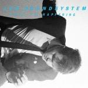
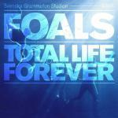
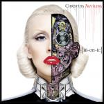

Music Reviews
-

LCD Soundsystem This Is Happening
James Murphy's last album as LCD Soundsystem has arrived. He more than delivers on every promise he made and every bit of hype that was generated.
Andrew Baer plays this on repeat... -
Janelle Monáe The ArchAndroid: Suites II and III
She's tipped for the top and has Diddy's patronage, but can Janelle Monáe prove that she's the next big thing?
Joe Rivers reviews... -
Wolf Parade Expo 86
Canadian supergroup show off their guitar techniques at a grander scale and extend their established synth quirks.
Juan Edgardo Rodríguez rocks the synth out... -
Wavves King of the Beach
Wavves put out another record. And it's got real musicians and everything.
Baxter Lehman tells you what to think... -

Foals Total Life Forever
Foals aim for universal love with this follow-up to 2008's Antidotes. Acting as a litmus test which will determine your opinion of the current British indie scene, Total Life Forever is either a breakthrough release or another earnest entry into the polished homogeny of dance-rock.
Ryan Pratt reviews... -

Stars The Five Ghosts
For their fifth outing, Stars take a bold step by downgrading their confessional reputation and increasing their electronic intake.
Juan Edgardo Rodríguez reviews... -

Christina Aguilera Bionic
Christina Aguilera misses on latest album, Bionic.
Genice Phillips reviews... -
Tokyo Police Club Champ
You're probably not too excited about a new Tokyo Police Club album, but Champ might just surprise you in how much the band has developed since their shaky start.
Luke John Winkie reviews... -
Micah P Hinson Micah P Hinson and the Pioneer Saboteurs
Micah P Hinson's latest offering is a vast and varied journey that drives all the way to success.
Daniel Dylan Wray reviews... -
Male Bonding Nothing Hurts
Like a shaken up bottle of Coke, Nothing Hurts is simply waiting to explode all over you.
Lukas Clark-Memler muses...